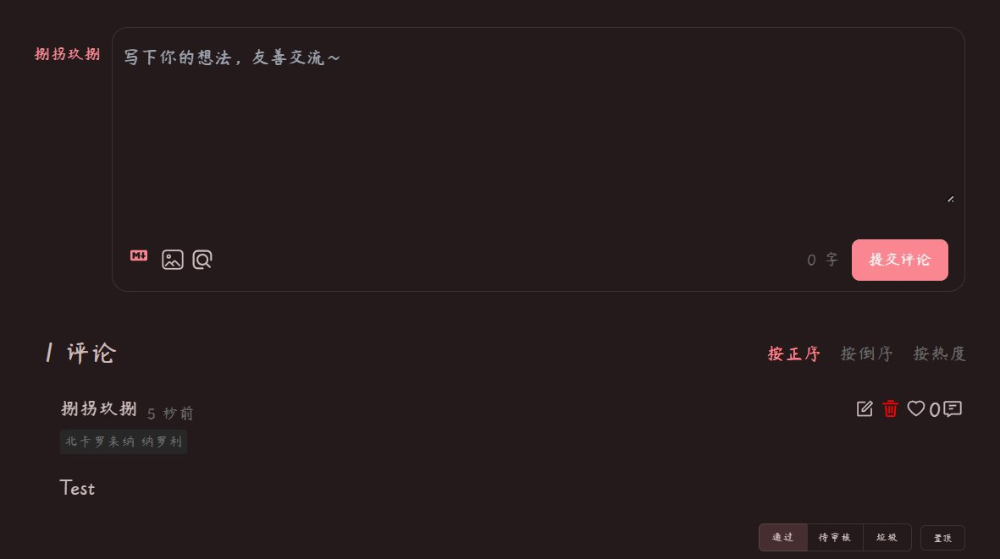

@CCA8798suki 来看看猫的waline后端托管？
https://t.co/OrlvgTxbYv

https://t.co/OrlvgTxbYv

【网站更新/www.cca8798.com】
1.更新了评论功能(加入waline系统)
2.统一账号管理
本次更新引入了许多bug，一一修复中...
希望能在文章下方看到大家的评论QwQ https://t.co/CD9yILGhz9
1.更新了评论功能(加入waline系统)
2.统一账号管理
本次更新引入了许多bug，一一修复中...
希望能在文章下方看到大家的评论QwQ https://t.co/CD9yILGhz9